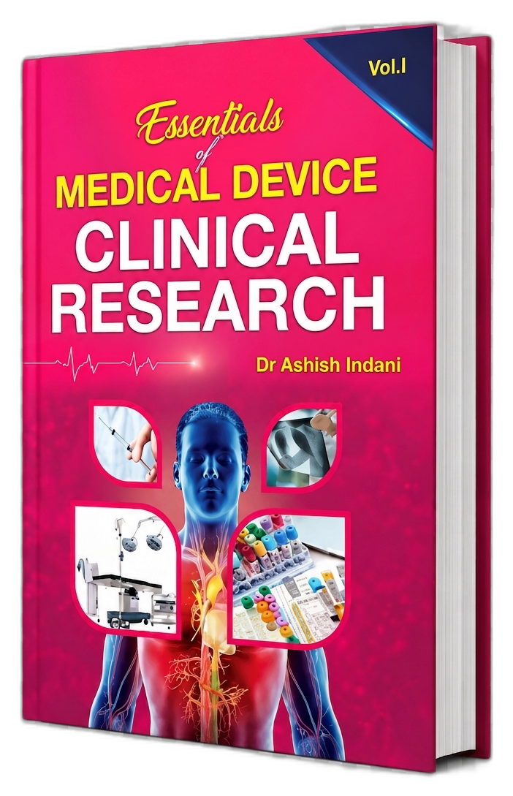
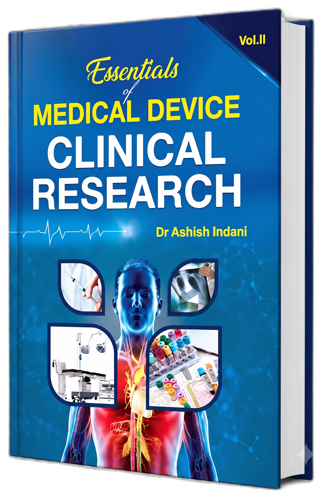
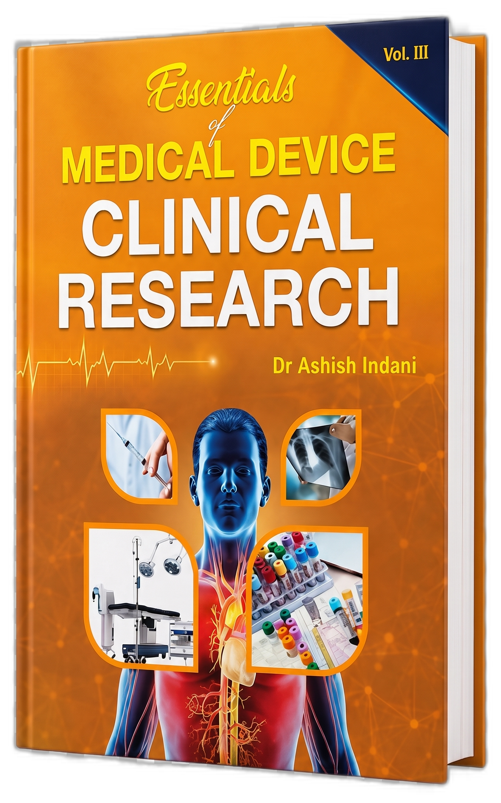
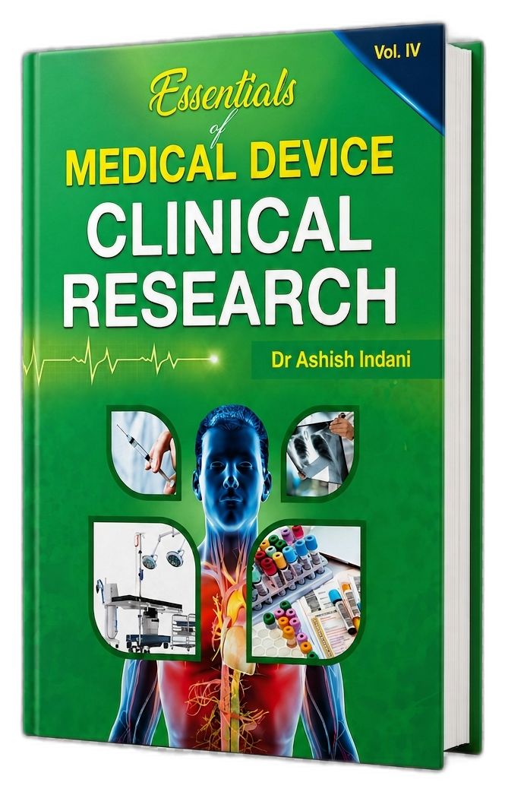

Medical devices do not simply move from an engineering concept to a patient’s bedside. Between innovation and adoption lies a demanding journey of scientific evaluation, clinical investigation, ethical oversight, regulatory scrutiny, risk assessment, and continuous post-market learning.
The medical-device industry is entering a defining phase globally. MedTech has emerged as a sunrise sector, driven by advances in medical devices, diagnostics, digital health, artificial intelligence, robotics, and connected technologies. Yet one of the most pressing challenges facing the sector has been the chronic scarcity of specialised, device-specific clinical research knowledge.
For decades, medical device clinical studies were forced to depend on conventional retrofitting from drug-oriented systems and methods. The drug and device differ in clinical science from various aspects — not only operational, but also scientific and pragmatic. Missing regulatory harmonisation and the wide-spread diversity of devices added to this complexity. While there were efforts from some authors, regulatory bodies, and universal standards forums such as CDISC and ISO, an end-to-end compilation of all that is needed in medical device clinical research was grossly missing before this book.
“This book is a unique compilation of all that is needed for a clinical research professional in Medical Devices. In this book, the overall clinical research requirements for medical devices are compiled from end-to-end.”
Essentials of Medical Device Clinical Research, authored by Dr. Ashish Indani, is written for professionals who navigate this journey. It is a comprehensive, multi-volume work that brings together the principles, processes, people, and practical realities involved in generating credible clinical evidence for medical devices.
The book recognises that medical-device research is not a shortened version of pharmaceutical research — it is a specialised field shaped by device classification, intended use, design evolution, human factors, technological change, and the relationship between performance, safety, and patient benefit.
He has held leadership and advisory responsibilities with prominent organisations including Stryker, Tata Consultancy Services (TCS), Meril Life Sciences, Biosensors International, and Advanced MedTech Solutions. His portfolio spans clinical investigation planning and execution, clinical evaluation, post-market surveillance, materiovigilance, pharmacovigilance, medical writing, risk management, and regulatory engagement across US FDA, EU MDR, IMDRF, ICH-GCP, ISO 13485, ISO 14971, and ISO 14155.
Dr. Indani’s academic foundation is complemented by a strong innovation portfolio extending to artificial intelligence, machine learning, data science, blockchain, biosensors, nanotechnology, and digital health. He is also a conference and TEDx speaker, advancing dialogue on medical-device research, regulatory science, patient safety, and the future of healthcare innovation.
“Bridging clinical evidence, regulatory science, and innovation to advance safer medical technologies.”
Career Highlights: GM – Zydus MedTech (Dec 2025–present) · Managing Director, Krishnamugdha Advance ResearchTeck · GM Clinical & Medical Affairs, AMS · Senior Manager Clinical Affairs, Stryker (grew dept. 1700%) · Principal Scientist & Head of Research & Innovation, TCS (5 yrs 7 mos) · Pioneer Researcher Awardee — BlackBuck Award (Medical Research Summit, Jul 2024).
The medical-technology industry is entering a defining phase. MedTech has emerged as a sunrise sector, driven by advances in medical devices, diagnostics, digital health, artificial intelligence, robotics, connected technologies, and indigenous innovation. India’s opportunity is vast — but realising this potential will require more than technology alone. It will require a strong ecosystem of clinical evidence, regulatory capability, risk-based decision-making, and professionally trained human resources.
One of the most pressing challenges facing the sector is the scarcity of specialised resources. Institutions and organisations need professionals who can understand not only device design and engineering, but also clinical investigation, regulatory pathways, quality systems, risk management, medical writing, data interpretation, safety reporting, and post-marketing surveillance.
“Industry and policy reports have identified gaps in the availability of skilled personnel across biomedical engineering, quality assurance, clinical research, regulatory affairs, and related technical functions.”
Institutions and organisations that develop capable professionals will be better positioned to contribute to safe innovation, indigenous product development, global regulatory compliance, and improved patient outcomes.
Essentials of Medical Device Clinical Research by Dr. Ashish Indani is a comprehensive, end-to-end reference for professionals involved in the clinical development, evaluation, regulation, and lifecycle management of medical devices. The work addresses an important gap in healthcare literature by presenting medical-device clinical research as a specialised discipline — with scientific, operational, regulatory, and practical requirements that differ significantly from pharmaceutical clinical trials.
Organised across four interconnected parts, the book begins with the fundamentals of medical devices, their classification, regulatory pathways, and the key similarities and differences between drug and device research. It then progresses to the core scientific and operational elements of clinical research, including medical writing, clinical operations, data management, safety reporting, medical coding, biostatistics, risk management, and the generation of clinical evidence.
The book also explores contemporary and evolving areas including software as a medical device, software in a medical device, diagnostic devices, ISO standards, materiovigilance, preclinical studies, and global marketing authorisation — making it relevant to professionals working with connected, digital, diagnostic, and technology-enabled medical products.
“Medical-device innovation is only as strong as the clinical evidence behind it. From the first clinical question to regulatory submission and post-market follow-up, medical-device research demands specialised knowledge, careful planning, scientific discipline, and close coordination across multiple functions.”
The first and unique comprehensive end-to-end coverage of clinical research for medical devices. No longer dependent on pharmaceutical drug trial retrofitting.
Explains why device research requires approaches fundamentally distinct from pharmaceutical trials — shaped by device classification, intended use, and human factors.
Rather than treating clinical research, regulation, operations, and technology as isolated subjects, presents them as parts of one interconnected evidence ecosystem.
Covers US FDA, EU MDR, IMDRF, ICH-GCP, ISO 13485, ISO 14971, ISO 14155 and other international frameworks relevant to device clinical research.
Written in a practical, structured manner intended to serve both as a foundational textbook for newcomers and a working reference for experienced professionals.
Covers SaMD, SiMD, AI/ML in diagnostics, digital health, ISO 63204/62304 SDLC standards — keeping readers current with the fastest-evolving frontier of MedTech.
“A definitive practical guide to transforming medical-device innovation into reliable clinical evidence, regulatory confidence, and meaningful patient benefit.”
At its core, Essentials of Medical Device Clinical Research is about more than compliance. It is about ensuring that innovation is supported by evidence that is scientifically sound, ethically generated, clinically meaningful, and relevant to the patients and healthcare systems it is intended to serve.
“Dr. Ashish Indani has assembled a vast body of knowledge… filling a long-standing gap in the industry where medical device clinical research historically depended on retrofitted drug-oriented methodologies. This work is a significant contribution to the field and serves as an invaluable resource for professionals, institutions, and the broader MedTech ecosystem.”
Those planning, conducting, or overseeing device clinical investigations, CERs, and regulatory submissions.
Regulatory affairs, quality assurance, and compliance professionals navigating global device frameworks.
Professionals preparing clinical study reports, CERs, SSCPs, and managing clinical data for device studies.
MedTech start-ups, manufacturers, and healthcare innovators developing evidence strategies for new devices.
Clinical investigators, research coordinators, ethics committees, and healthcare professionals in device trials.
Postgraduate students and faculty in biomedical, pharmacy, biotechnology, clinical research, and engineering programmes.
“This book is designed to serve as a practical bridge between academic learning and industry application — supporting medical-device, biomedical, pharmacy, biotechnology, and clinical-research programmes.”
The 4-volume set is available worldwide. A 10% discount is available for direct orders via the official website. Special bulk-purchase arrangements are available for libraries, universities, hospitals, and corporate training programmes.